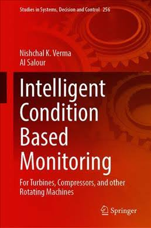

BOOKS CO-AUTHORED/EDITED | |
| [1] Nishchal K. Verma, A. Salour, Intelligent Condition Based Monitoring: For Turbines, Compressors, and other Rotating Machines Studies in Systems, Decision and Control, Springer, 2020, ISBN 978-981-15-0512-6. (https://www.springer.com/gp/book/9789811505119) |
 |
[2] Nishchal K. Verma, A. K. Ghosh, Computational Intelligence: Theories, Applications and Future Directions- Volume I (ICCI-2017) Advances in Intelligent Systems and Computing, Springer, 2019, ISBN 978-981-13-1132-1. (https://www.springer.com/gp/book/9789811311314) |
|
[3] Nishchal K. Verma, A. K. Ghosh Computational Intelligence: Theories, Applications and Future Directions- Volume II (ICCI-2017) Advances in Intelligent Systems and Computing, Springer, 2019, ISBN 978-981-13-1135-2. (https://www.springer.com/gp/book/9789811311345) |
 |
[4] V. K. Giri, Nishchal K. Verma, R. K. Patel, and V. P. Singh Computing Algorithms with Applications in Engineering Proceedings of ICCAEEE 2019 Algorithms for Intelligent Systems, Springer, 2020, ISBN 978-981-15-2369-4. (https://www.springer.com/gp/book/9789811523687) |
|
BOOK CHAPTERS | |
[1] Mayank Pandey, Vikas Singh and Nishchal K. Verma Fuzzy based investment portfolio management, Applying Fuzzy Logic for the Digital Economy and Society, Fuzzy Management Methods - Book Series by Springer, 2018. (Accepted) |
|
[2] Vikas Singh and Nishchal K. Verma Deep learning architecture for high-level feature generation using stacked auto encoder for business intelligence Complex systems: solutions and challenges in economics, management and engineering, Springer International Publishing, 2017. (Accepted) |
|
| [3] R. Kiran, P. Sircar and Nishchal K. Verma Soft computing approaches for two-dimensional beamforming Recent Developments and New Direction in Soft-Computing Foundations and Applications, Springer International Publishing, pp. 301-314, 2016. |